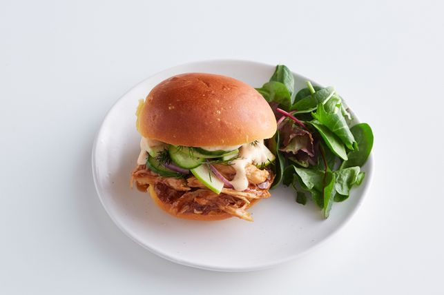

Barbecued chicken burgers

description:
These homemade smoky barbecue chicken burgers are ready in 10 minutes, perfect for busy school nights.
Ingredients:
- 1 green apple, quartered, cored, very thinly sliced
- 1 Lebanese cucumber, very thinly sliced
- 1/4 small red onion, very thinly sliced
- 2 tbsp fresh dill sprigs
- 1/2 cup lime and chilli vinaigrette
- 2 cooked chicken breasts, shredded
- 1/2 cup smoky barbecue sauce
- 4 brioche burger buns, split
- Chipotle aioli, to serve
- Salad leaves, to serve
Instructions:
- Place apple, cucumber and onion in a bowl. Add dill. Drizzle with vinaigrette. Season with salt and pepper. Toss well to combine. Set aside.
- Meanwhile, heat a large non-stick frying pan over medium-high heat. Add chicken to pan. Cook, tossing, for 2 minutes or until heated through. Add sauce and 1/4 cup water. Season with salt and pepper. Cook, tossing, for 2 minutes or until sauce thickens and coats chicken.
- Place burger bases on a plate. Top with chicken, then apple mixture. Drizzle with aioli and top with burger tops. Serve with salad leaves.
Return To Home